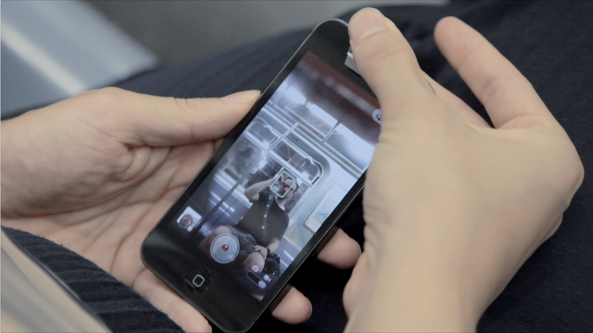

#slyPhone is an attachment for an iPhone that redirects the front facing camera
90° letting you take surreptitious photographs.
Download the lasercutter plans for iPhone 4s and 5
Want one?
Now launching the #slyPhone Explorer Program on an application basis. Submit proposals describing what you would do with yours via twitter #ifIhadSly #slyPhone. Winners receive a #slyPhone in the mail and an invitation to join the slyPhone Explorer Program.Download the lasercutter plans for iPhone 4s and 5